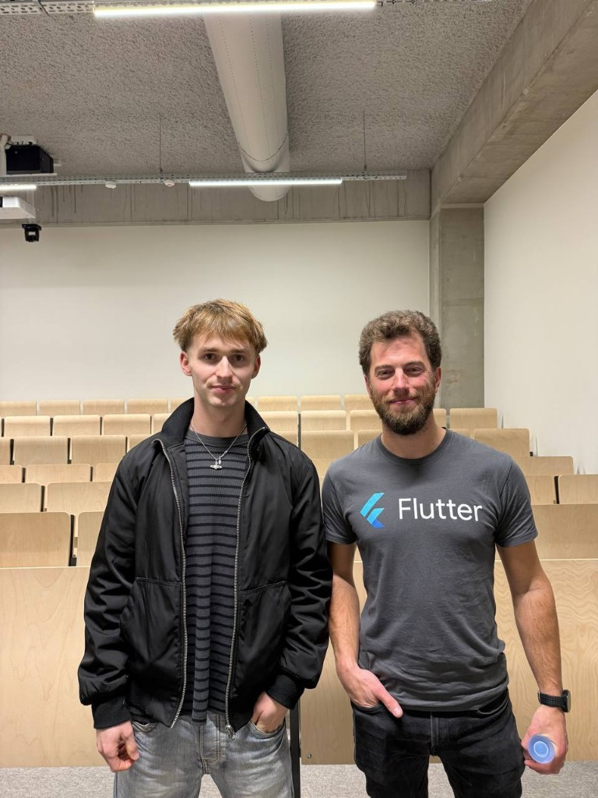
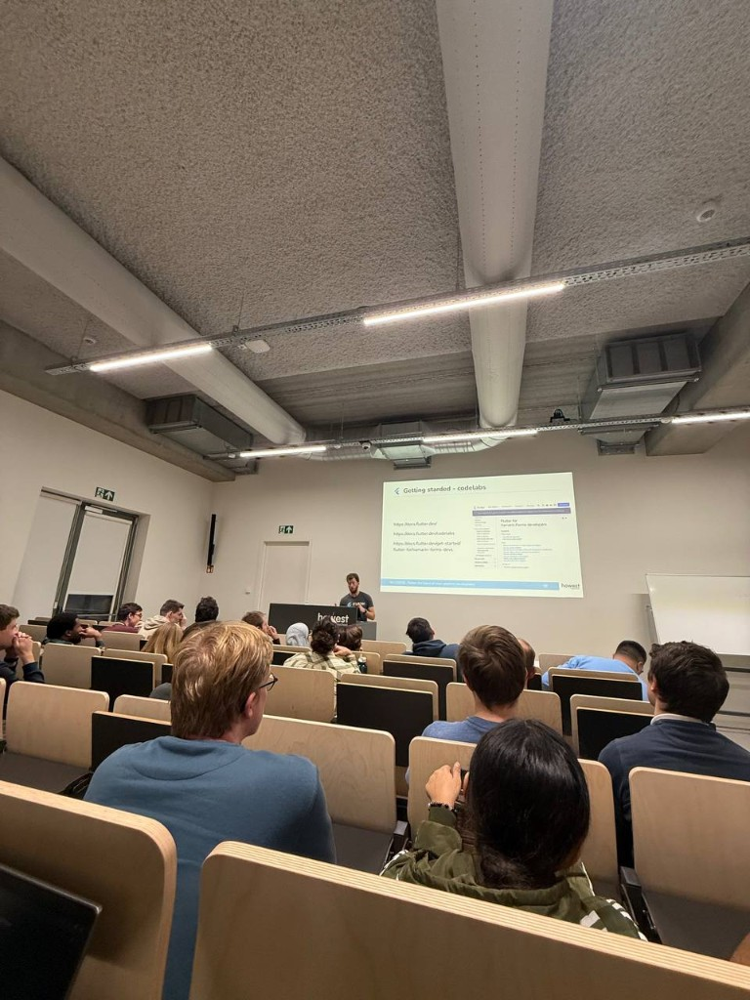

Tech&Meet — Flutter

With Thijs Pirmez after the session — thanks for the practical walkthrough.

During the talk: Flutter docs, codelabs, and getting started resources on screen.
The Tech&Meet session spotlighted Flutter — Google’s framework that uses a cross-platform approach: one codebase targeting mobile, web, desktop, and even embedded surfaces. For someone thinking about real products that must exist on more than one device, that is a game-changer when planning multi-surface roadmaps instead of rebuilding the same app three times in different stacks.
Event context
Tech&Meet is Howest’s recurring format for short, practical tech sessions — usually after hours, aimed at students who want exposure beyond the standard timetable. This edition was fully focused on Flutter and Dart, with live pointers to official codelabs and documentation. The audience was mostly applied computer science students and others curious about mobile and UI engineering; the room was a typical campus lecture hall, which kept the atmosphere informal but focused.
Speaker — Thijs Pirmez
Thijs Pirmez led the session. He presented from experience with Flutter in production contexts (visible from the ecosystem around the talk — Flutter branding, concrete “getting started” paths, and honest emphasis on workflow rather than slides full of buzzwords). He connected Xamarin.Forms migration material on screen to a real question many teams face: how to move legacy mobile apps toward a single modern toolkit without freezing feature work for months.
Thanks to Thijs for an insightful and practical session: less theory for its own sake, more
“here is how you start today” with links to docs.flutter.dev, codelabs, and a clear learning order.
Technical content & development loop
The core message was technical. Flutter’s declarative, widget-based UI in Dart is built to keep layouts consistent and pixel-aware across screen sizes — the familiar idea of “Write once, deploy everywhere,” with the nuance that you still tune platform-specific details when needed. What stuck with me most was the development loop: get started fast, iterate with hot reload, and push UI changes without losing momentum. Compared with slower compile cycles in some native stacks, that feedback loop is a serious productivity argument for prototypes and MVPs.
We already touch web and general programming in the programme; this session bridged toward mobile and embedded possibilities I had not prioritised yet. It made cross-platform product thinking feel achievable in a semester project, not only in big-company keynotes.
Reflection — would I recommend it?
I learned enough to want a small Flutter side experiment (one screen, one API, one build target) before judging the stack. Nothing felt like marketing — the codelab links and honest scope helped. I would attend another Tech&Meet on a framework I do not use daily, and I would recommend this session to classmates who only know web or C# and wonder how mobile fits their profile.
If I had to suggest one improvement: even more live coding time versus slides, because hot reload is the selling point you need to see to believe. It pairs well with the cybersecurity fair I attended earlier — breadth across security and product delivery is the kind of learning I want to keep up.